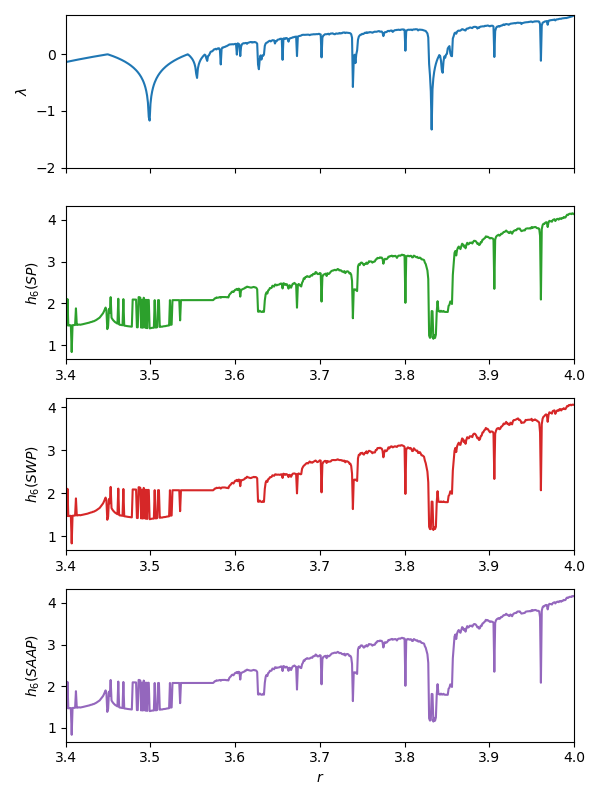

Permutation (symbolic)
Entropies.SymbolicPermutation — TypeSymbolicPermutation(; τ = 1, m = 3) <: PermutationProbabilityEstimatorA symbolic, permutation based probabilities/entropy estimator.
Properties of original signal preserved
Permutations of a signal preserve ordinal patterns (sorting information). This implementation is based on Bandt & Pompe et al. (2002)[BandtPompe2002] and Berger et al. (2019) [Berger2019].
Estimation
Univariate time series
To estimate probabilities or entropies from univariate time series, use the following methods:
probabilities(x::AbstractVector, est::SymbolicPermutation). Constructs state vectors fromxusing embedding lagτand embedding dimensionm. The ordinal patterns of the state vectors are then symbolized, and probabilities are taken as the relative frequency of symbols.genentropy(x::AbstractVector, est::SymbolicPermutation; α=1, base = 2)computes probabilities by callingprobabilities(x::AbstractVector, est::SymbolicPermutation), then computer the order-αgeneralized entropy to the given base.
See below for in-place versions below allow you to provide a pre-allocated symbol array s for faster repeated computations of input data of the same length.
By default, embedding dimension $m = 3$ with embedding lag $\tau = 1$ is used when embedding a time series for symbolization. You should probably make a more informed decision about embedding parameters when computing the permutation entropy of a real time series. In all cases, $m$ must be at least 2 (there are no permutations of a single-element state vector, so need $m \geq 2$).
Multivariate datasets
Although not dealt with in the original Bandt & Pompe (2002) paper, numerically speaking, permutation entropy can also be computed for multivariate datasets with dimension ≥ 2. Such datasets may be, for example, preembedded time series. Then, just skip the delay reconstruction step, compute and symbols directly from the $L$ existing state vectors $\{\mathbf{x}_1, \mathbf{x}_2, \ldots, \mathbf{x_L}\}$.
probabilities(x::Dataset, est::SymbolicPermutation). Compute ordinal patterns of the state vectors ofxdirectly (without doing any embedding), symbolize those patterns, and compute probabilities as relative frequencies of symbols.genentropy(x::Dataset, est::SymbolicPermutation). Computes probabilities from symbol frequencies usingprobabilities(x::Dataset, est::SymbolicPermutation), then computes the order-αgeneralized (permutation) entropy to the given base.
A dynamical interpretation of the permutation entropy does not necessarily hold if computing it on generic multivariate datasets. Method signatures for Datasets are provided for convenience, and should only be applied if you understand the relation between your input data, the numerical value for the permutation entropy, and its interpretation.
Speeding up repeated computations
A pre-allocated integer symbol array s can be provided to save some memory allocations if the probabilities are to be computed for multiple data sets.
Note: it is not the array that will hold the final probabilities that is pre-allocated, but the temporary integer array containing the symbolized data points. Thus, if provided, it is required that length(x) == length(s) if x is a Dataset, or length(s) == length(x) - (m-1)τ if x is a univariate signal that is to be embedded first.
Use the following signatures.
probabilities!(s::Vector{Int}, x::AbstractVector, est::SymbolicPermutation) → ps::Probabilities
probabilities!(s::Vector{Int}, x::AbstractDataset, est::SymbolicPermutation) → ps::ProbabilitiesDescription
Embedding, ordinal patterns and symbolization
Consider the $n$-element univariate time series $\{x(t) = x_1, x_2, \ldots, x_n\}$. Let $\mathbf{x_i}^{m, \tau} = \{x_j, x_{j+\tau}, \ldots, x_{j+(m-1)\tau}\}$ for $j = 1, 2, \ldots n - (m-1)\tau$ be the $i$-th state vector in a delay reconstruction with embedding dimension $m$ and reconstruction lag $\tau$. There are then $N = n - (m-1)\tau$ state vectors.
For an $m$-dimensional vector, there are $m!$ possible ways of sorting it in ascending order of magnitude. Each such possible sorting ordering is called a motif. Let $\pi_i^{m, \tau}$ denote the motif associated with the $m$-dimensional state vector $\mathbf{x_i}^{m, \tau}$, and let $R$ be the number of distinct motifs that can be constructed from the $N$ state vectors. Then there are at most $R$ motifs; $R = N$ precisely when all motifs are unique, and $R = 1$ when all motifs are the same.
Each unique motif $\pi_i^{m, \tau}$ can be mapped to a unique integer symbol $0 \leq s_i \leq M!-1$. Let $S(\pi) : \mathbb{R}^m \to \mathbb{N}_0$ be the function that maps the motif $\pi$ to its symbol $s$, and let $\Pi$ denote the set of symbols $\Pi = \{ s_i \}_{i\in \{ 1, \ldots, R\}}$.
Probability computation
The probability of a given motif is its frequency of occurrence, normalized by the total number of motifs (with notation from [Fadlallah2013]),
where the function $\mathbf{1}_A(u)$ is the indicator function of a set $A$. That is, $\mathbf{1}_A(u) = 1$ if $u \in A$, and $\mathbf{1}_A(u) = 0$ otherwise.
Entropy computation
The generalized order-α Renyi entropy[Rényi1960] can be computed over the probability distribution of symbols as $H(m, \tau, \alpha) = \dfrac{\alpha}{1-\alpha} \log \left( \sum_{j=1}^R p_j^\alpha \right)$. Permutation entropy, as described in Bandt and Pompe (2002), is just the limiting case as $α \to1$, that is $H(m, \tau) = - \sum_j^R p(\pi_j^{m, \tau}) \ln p(\pi_j^{m, \tau})$.
Do not confuse the order of the generalized entropy (α) with the order m of the permutation entropy (m, which controls the symbol size). Permutation entropy is usually estimated with α = 1, but the implementation here allows the generalized entropy of any dimension to be computed from the symbol frequency distribution.
Example
This example reproduces an example from Bandt and Pompe (2002), where the permutation entropy is compared with the largest Lyapunov exponents from time series of the chaotic logistic map. Entropy estimates using SymbolicWeightedPermutation and SymbolicAmplitudeAwarePermutation are added here for comparison.
using DynamicalSystems, PyPlot, Entropies
ds = Systems.logistic()
rs = 3.4:0.001:4
N_lyap, N_ent = 100000, 10000
m, τ = 6, 1 # Symbol size/dimension and embedding lag
# Generate one time series for each value of the logistic parameter r
lyaps = Float64[]
hs_perm = Float64[]
hs_wtperm = Float64[]
hs_ampperm = Float64[]
base = Base.MathConstants.e
for r in rs
ds.p[1] = r
push!(lyaps, lyapunov(ds, N_lyap))
x = trajectory(ds, N_ent) # time series
hperm = Entropies.genentropy(x, SymbolicPermutation(m = m, τ = τ), base = base)
hwtperm = Entropies.genentropy(x, SymbolicWeightedPermutation(m = m, τ = τ), base = base)
hampperm = Entropies.genentropy(x, SymbolicAmplitudeAwarePermutation(m = m, τ = τ), base = base)
push!(hs_perm, hperm); push!(hs_wtperm, hwtperm); push!(hs_ampperm, hampperm)
end
f = figure(figsize = (6, 8))
a1 = subplot(411)
plot(rs, lyaps); ylim(-2, log(2)); ylabel("\$\\lambda\$")
a1.axes.get_xaxis().set_ticklabels([])
xlim(rs[1], rs[end]);
a2 = subplot(412)
plot(rs, hs_perm; color = "C2"); xlim(rs[1], rs[end]);
xlabel(""); ylabel("\$h_6 (SP)\$")
a3 = subplot(413)
plot(rs, hs_wtperm; color = "C3"); xlim(rs[1], rs[end]);
xlabel(""); ylabel("\$h_6 (SWP)\$")
a4 = subplot(414)
plot(rs, hs_ampperm; color = "C4"); xlim(rs[1], rs[end]);
xlabel("\$r\$"); ylabel("\$h_6 (SAAP)\$")
tight_layout()
savefig("permentropy.png")
Utility methods
Some convenience functions for symbolization are provided.
Entropies.symbolize — Functionsymbolize(x::AbstractVector{T}, est::SymbolicPermutation) where {T} → Vector{Int}
symbolize!(s, x::AbstractVector{T}, est::SymbolicPermutation) where {T} → Vector{Int}If x is a univariate time series, first x create a delay reconstruction of x using embedding lag est.τ and embedding dimension est.m, then symbolizing the resulting state vectors with encode_motif.
Optionally, the in-place symbolize! can be used to put symbols in a pre-allocated integer vector s, where length(s) == length(x)-(est.m-1)*est.τ.
symbolize(x::AbstractDataset{m, T}, est::SymbolicPermutation) where {m, T} → Vector{Int}
symbolize!(s, x::AbstractDataset{m, T}, est::SymbolicPermutation) where {m, T} → Vector{Int}If x is an m-dimensional dataset, then motif lengths are determined by the dimension of the input data, and x is symbolized by converting each m-dimensional state vector as a unique integer in the range $1, 2, \ldots, m-1$, using encode_motif.
Optionally, the in-place symbolize! can be used to put symbols in a pre-allocated integer vector s, where length(s) == length(s).
Examples
Symbolize a 7-dimensional dataset. Motif lengths (or order of the permutations) are inferred to be 7.
using DelayEmbeddings, Entropies
D = Dataset([rand(7) for i = 1:1000])
s = symbolize(D, SymbolicPermutation())Symbolize a univariate time series by first embedding it in dimension 5 with embedding lag 2. Motif lengths (or order of the permutations) are therefore 5.
using DelayEmbeddings, Entropies
n = 5000
x = rand(n)
s = symbolize(x, SymbolicPermutation(m = 5, τ = 2))The integer vector s now has length n-(m-1)*τ = 4992, and each s[i] contains the integer symbol for the ordinal pattern of state vector x[i].
Entropies.encode_motif — Functionencode_motif(x, m::Int = length(x)) → s::IntEncode the length-m motif x (a vector of indices that would sort some vector v in ascending order) into its unique integer symbol $s \in \{1, 2, \ldots, m - 1 \}$, using Algorithm 1 in Berger et al. (2019)[Berger2019].
Example
v = rand(5)
# The indices that would sort `v` in ascending order. This is now a permutation
# of the index permutation (1, 2, ..., 5)
x = sortperm(v)
# Encode this permutation as an integer.
encode_motif(x)- BandtPompe2002Bandt, Christoph, and Bernd Pompe. "Permutation entropy: a natural complexity measure for time series." Physical review letters 88.17 (2002): 174102.
- Berger2019Berger, Sebastian, et al. "Teaching Ordinal Patterns to a Computer: Efficient Encoding Algorithms Based on the Lehmer Code." Entropy 21.10 (2019): 1023.
- Fadlallah2013Fadlallah, Bilal, et al. "Weighted-permutation entropy: A complexity measure for time series incorporating amplitude information." Physical Review E 87.2 (2013): 022911.
- Rényi1960A. Rényi, Proceedings of the fourth Berkeley Symposium on Mathematics, Statistics and Probability, pp 547 (1960)
- Berger2019Berger, Sebastian, et al. "Teaching Ordinal Patterns to a Computer: Efficient Encoding Algorithms Based on the Lehmer Code." Entropy 21.10 (2019): 1023.
- Berger2019Berger, Sebastian, et al. "Teaching Ordinal Patterns to a Computer: Efficient Encoding Algorithms Based on the Lehmer Code." Entropy 21.10 (2019): 1023.